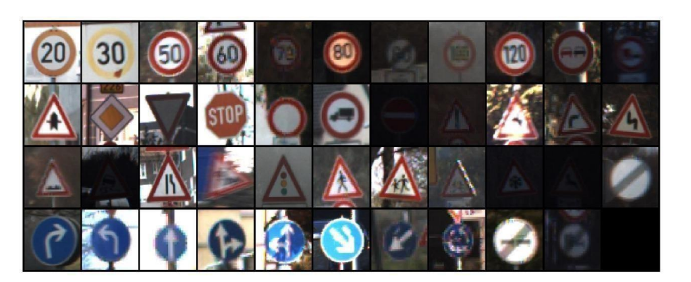
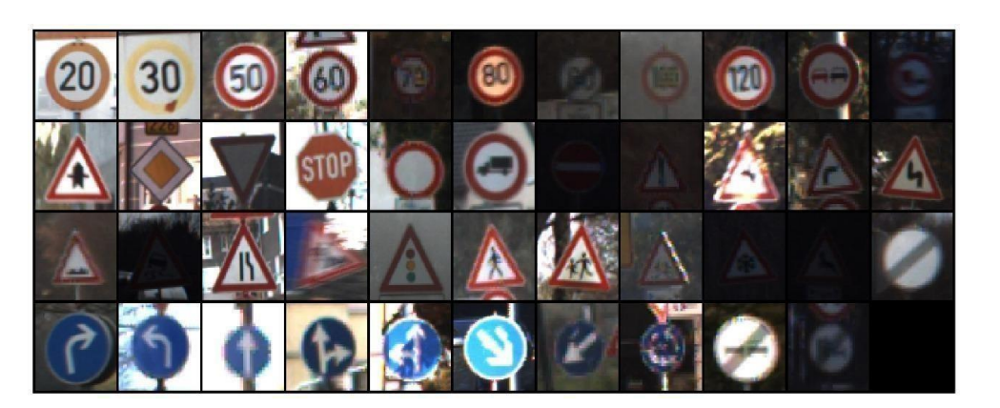
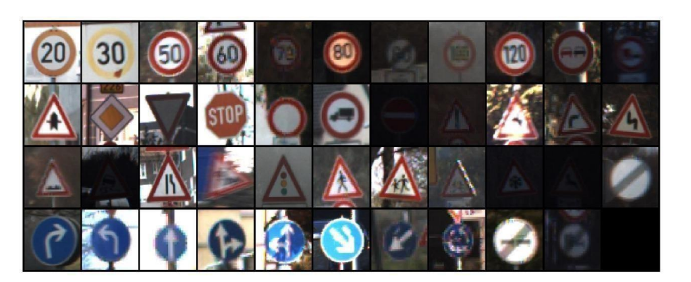

I am a B.Tech graduate in Artificial Intelligence and Machine Learning with a passion for cloud computing,
intelligent systems, and data-driven problem solving. I have completed internships in Data Science and Cloud Solutions,
and AWS re/Start training with hands-on projects. I aim to bring fresh ideas and dedication to my first professional role.
Projects
Traffic Sign Detection and Recognition (97% Accuracy)

Developed using ResNet and GTSRB dataset with 32,635 images. Implemented preprocessing, transfer learning, and hyperparameter optimization.
Prediction of Cardiac Arrhythmia
Applied machine learning algorithms to predict arrhythmia from patient data, improving diagnostic accuracy.
Internships
3Cortex – Data Science & Cloud Solutions
Nu-Way Heat Transfer Pvt Ltd – QA/QC Junior Engineer
Sathya Techno Fabs – Production Engineer (Third-party for Tata Steels)
 
